Quick Start Guide
Download, install, and launch the application on macOS or Windows in minutes — then follow the field procedure to run, collect, and post results for every deployment.
Jump to the Field Procedure ↓Download, install, and launch the application on macOS or Windows in minutes — then follow the field procedure to run, collect, and post results for every deployment.
Jump to the Field Procedure ↓Choose your path below. New installs and upgrades share most steps, but upgrades require exiting the running app and replacing the existing copy first.
The app checks for new releases at launch. Look at the version pill beside the asbuilt-reporter name in the header:
Click the caret beside Download to open the dropdown. It shows the new version number, the version you are running, and a Release notes link. Choose the download for your platform and wait for it to finish before moving on.
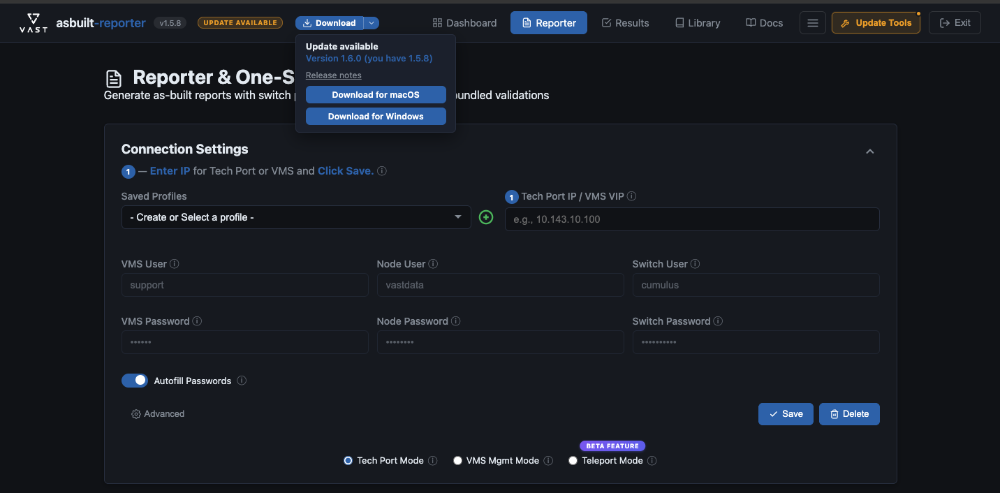
macOS refuses to replace an app that is still running, so this step is not optional — skipping it is the most common cause of a failed upgrade. In the app's navbar, click the Exit button (top-right corner).
Wait until the page reports that the application has stopped before continuing.
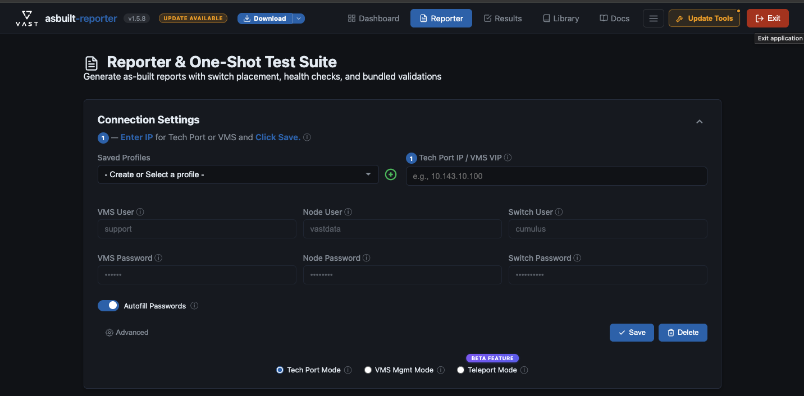
Download the DMG that matches your Mac from GitHub Releases, then double-click it to mount:
VAST-Reporter-vX.Y.Z-mac-arm64.dmgVAST-Reporter-vX.Y.Z-mac-x64.dmgDouble-click the DMG you downloaded earlier — it is in your Downloads folder unless you chose another location — to mount it.
Drag VAST Reporter.app onto the Applications folder shortcut to install.

Since an earlier version is already installed, macOS will ask if you want to replace it. Click Replace to overwrite the old version with the new one.

On first launch, macOS Gatekeeper will block the app because it is not signed with an Apple Developer certificate. You'll see a dialog saying "VAST Reporter.app" Not Opened.
This is expected for internal tools distributed outside the App Store. Click Done — do not click "Move to Trash".
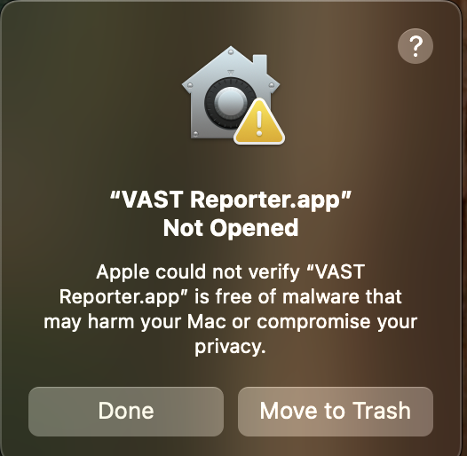
Open System Settings (Apple menu → System Settings) and navigate to Privacy & Security in the left sidebar.
Scroll down to the Security section. You'll see a message: "VAST Reporter.app" was blocked to protect your Mac.
Click the Open Anyway button next to the message.
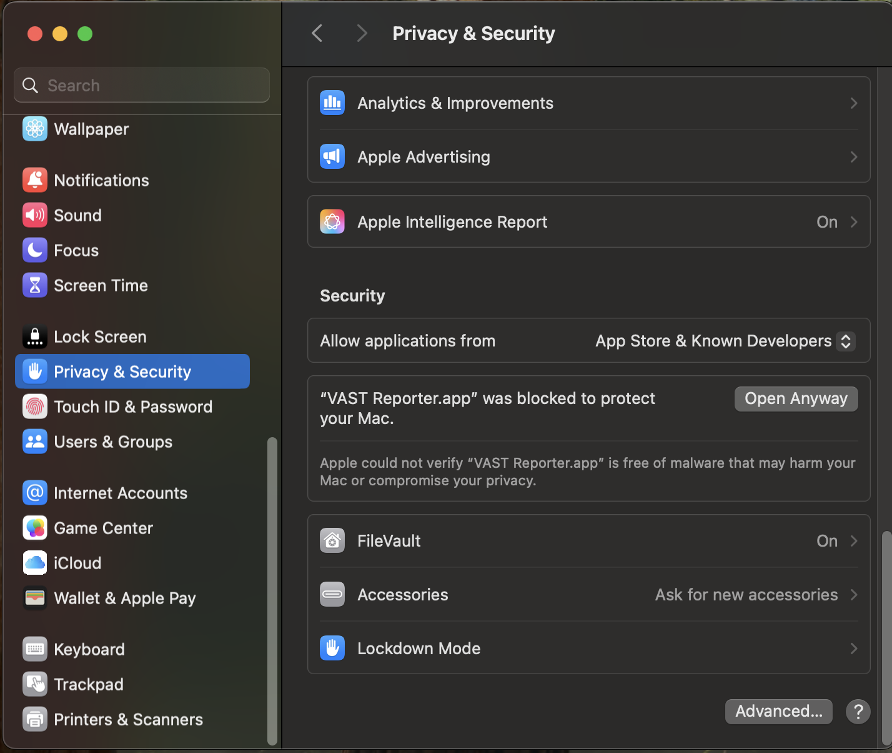
A second confirmation dialog will appear asking if you really want to open the app. macOS includes a warning about unverified software.
Click Open Anyway to proceed. Do not click "Move to Trash" or "Done".

macOS requires administrator authorization to allow the unsigned app to run. Use Touch ID or click Use Password... and enter your Mac administrator password.
After authenticating, the app will launch and your browser will open automatically to localhost:5173.
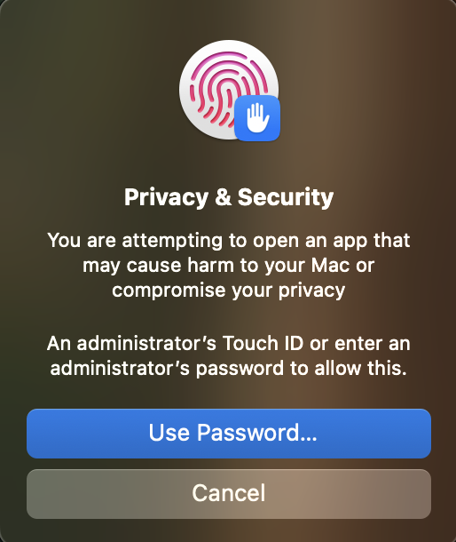
The Windows build is distributed as a portable ZIP archive — no installer required. Extract, run, and go.
Download VAST-Reporter-vX.Y.Z-win.zip from GitHub Releases.
Right-click the ZIP file and select Extract All... Choose a destination folder (e.g., C:\Program Files\VAST Reporter or your Desktop).
Open the extracted folder and double-click vast-reporter.exe to launch.
On first launch, Windows SmartScreen may display a warning: "Windows protected your PC." This is expected for unsigned internal tools.
Click More info, then click Run anyway to proceed.
Your default browser will open automatically to localhost:5173. The app is ready to use.
To upgrade, close the running app, replace the extracted folder with the new version, and relaunch. The SmartScreen step will repeat for each new version.
The validation workflows do not ship inside the app. They are fetched separately and cached locally, so a fresh install — and every upgrade — is worth a quick check before you rely on them in the field.
Click Update Tools in the top-right of the header. The dropdown lists every tool with its description, cached size, and the date it was last updated. The heading shows how many are cached — 4/4 cached means you are ready to run.
Tools older than a week carry an age badge such as 12D OLD. That is a prompt, not an error: a cached tool keeps working, but validation results are only as current as the tool that produced them.
Click Update Tools at the bottom of the dropdown to fetch the latest versions. Progress appears in the Output Results terminal on the Reporter page.
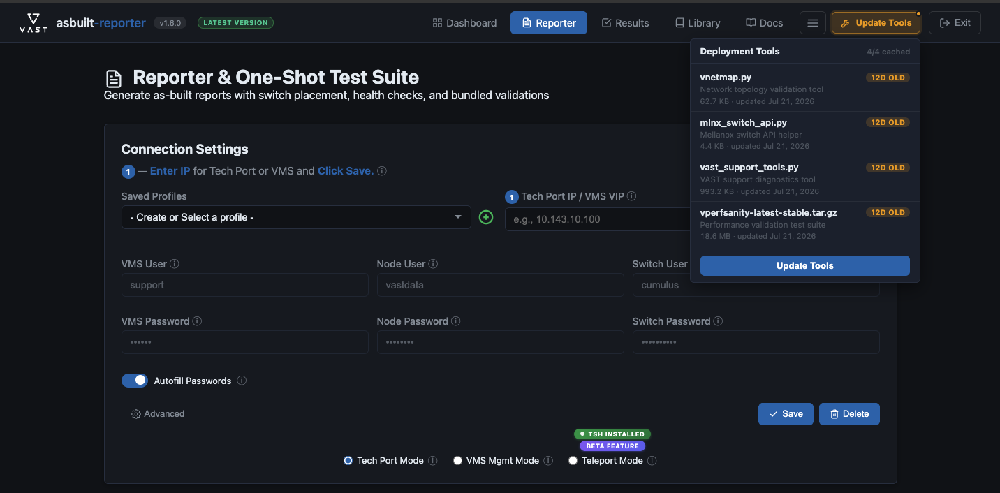
Expected of every PSE and SE on every deployment: run the as-built report and the full Test Suite, confirm the results, and post them to the customer's SFDC account and internal Slack channel.
Already know the tool? Run from this list. Each item links to its full step below. Ticks are not saved.
Install the latest release — macOS .dmg or Windows .zip — from GitHub Releases. The installation steps above walk through Gatekeeper and SmartScreen.
Already installed? Check the version pill in the app header. UPDATE AVAILABLE means follow the Upgrade from Earlier Version path above; LATEST VERSION means you are current.
Open VAST Reporter. Your browser opens the UI at localhost:5173 automatically. Everything runs on your laptop — nothing is hosted remotely.
Click Update Tools in the top-right of the header, then click the Update Tools button at the bottom of the dropdown. This fetches the latest vnetmap.py, mlnx_switch_api.py, vast_support_tools.py, and vperfsanity package.
You are ready when the dropdown heading reads 4/4 cached. Age badges such as 13D OLD are a prompt to refresh, not an error.
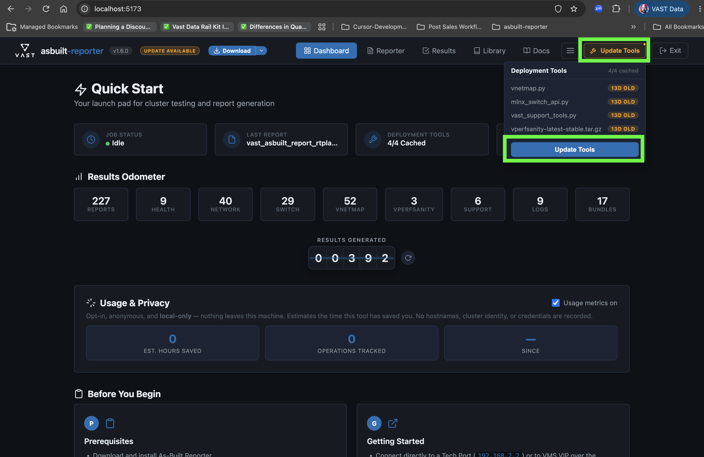
Click Reporter in the header to open Reporter & One-Shot Test Suite. Every remaining on-site step happens on this page: Connection Settings at the top, and the Reporter / Test Suite tabs with the Select Operation tile below.
Pick the connection mode that matches how your laptop reaches the cluster. You select the mode in Step 6.
| Mode | IP to enter | Use when |
|---|---|---|
| Tech Port | 192.168.2.2 | Your laptop is cabled directly to a CNode tech port. |
| VMS Mgmt | VMS management VIP | Your laptop is on the customer management network or VPN. |
| Teleport (Beta) | VMS management VIP (not 127.0.0.1) | Remote access. Requires the tsh client (the pill reads tsh Installed) and an active tsh login session. Also fill in the Teleport Node and User fields that appear. |
Choose the cluster under Saved Profiles, or click ⊕ to create a new one. Then:
support (VMS), vastdata (node), and cumulus (switch).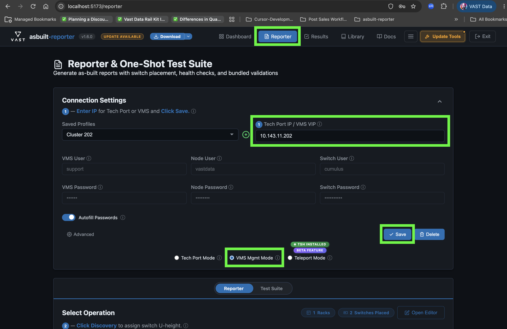
This places switches in the rack diagram so it matches the physical install.
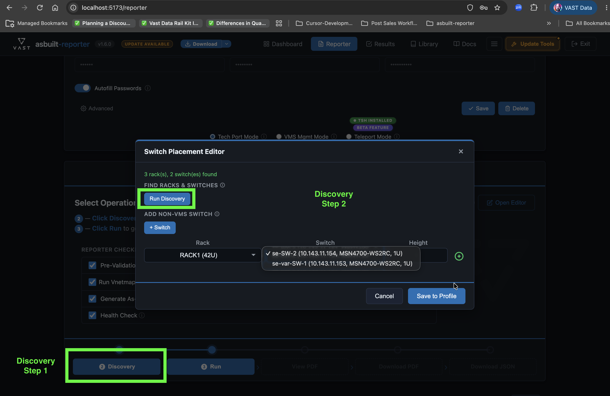
Click Test Suite in the Reporter / Test Suite toggle above the Select Operation tile. The tile switches from the report-only options to the full list of post-deployment operations, described in Step 9.
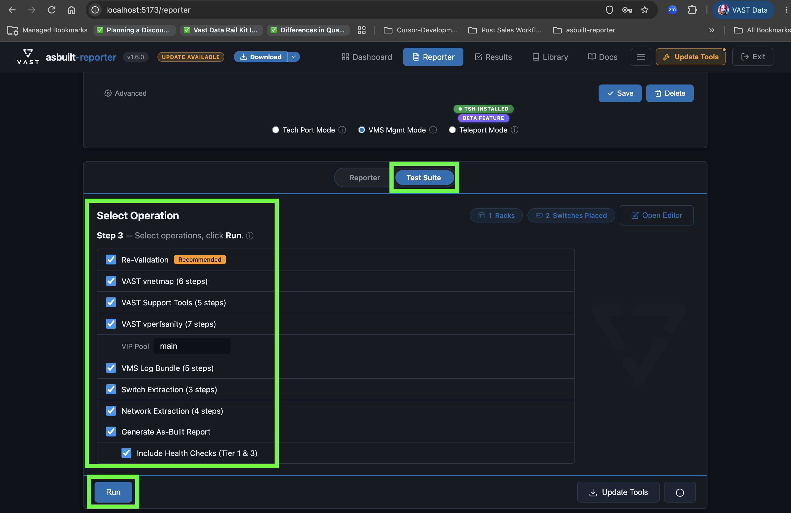
Check every operation, including Include Health Checks (Tier 1 & 3):
| Operation | What it does | Time / impact |
|---|---|---|
| Re-Validation | Pre-flight check of credentials, VMS access, rack and switch config, and SSH access. | Seconds |
| VAST vnetmap | LLDP topology validation to catch mis-cabling. | Minutes; read-only |
| VAST Support Tools | Runs vast_support_tools diagnostics and downloads the archive. | Several minutes |
| VAST vperfsanity | Creates test views, runs write/read performance tests, uploads results to VAST, and cleans up. | 30+ min; real I/O load |
| VMS Log Bundle | Creates and downloads a VMS log archive. | Depends on log size |
| Switch Extraction | Saves the running config of each discovered switch. | Minutes; read-only |
| Network Extraction | Collects node network config, interfaces, routes, and bonds. | Minutes; read-only |
| Generate As-Built Report | Builds the PDF and JSON. Include Health Checks adds the Tier 1 & 3 checks. | A few minutes |
Confirm the vperfsanity VIP Pool name (default main), then click Run.
Progress streams to the Output Results pane. Re-Validation runs first; if it reports a problem, fix it and click Run again. Use Cancel to stop a run.
Click Results in the header, open the Bundles tab, and find the newest validation_bundle_<cluster>_<YYYYMMDD_HHMMSS>.zip for your cluster (newest at the top). Click the download icon under Actions.
The bundle contains every Test Suite output, plus the as-built PDF and JSON under reports/.
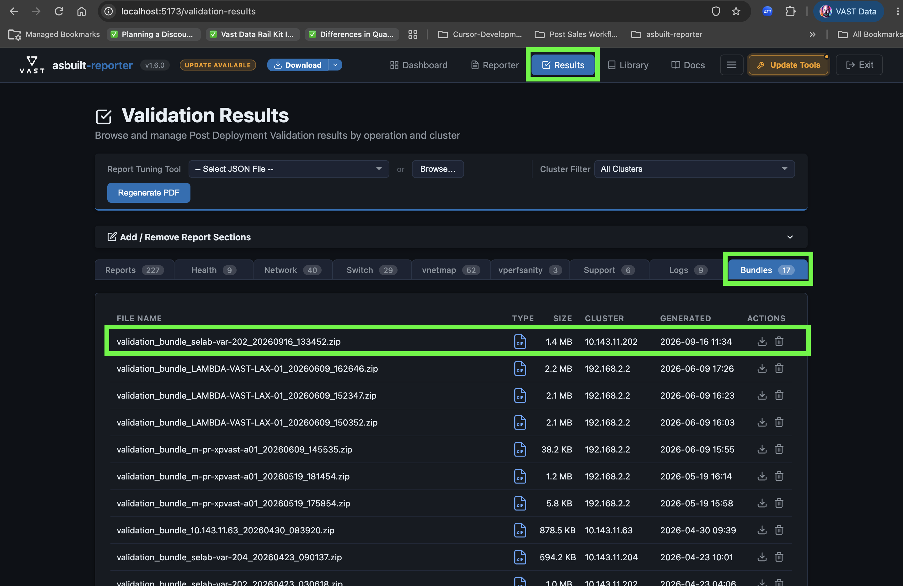
Unzip the bundle and open SUMMARY.md. Under Category Status, every category should read OK. (manifest.json holds the same status in machine-readable form.)
| Status | Meaning | What to do |
|---|---|---|
| OK | Output collected from this run. | Nothing. |
| SKIPPED | The operation wasn't selected. | Rerun it — this procedure expects every operation. |
| FAILED | The operation ran but produced no output. | Check the Output Results pane, fix the cause, and rerun that operation. |
| STALE | Only a file from before this run was found. It is excluded, or included as PRIOR with a banner. | Rerun that operation. |
| MISSING | No output file was found. | Rerun that operation. |
Check the cabling results in two places:
Attach these three files in both places:
.zip from Step 10SFDC: the customer account → Notes & Attachments.
Slack: a thread in #internal-<customer-name>. You can copy this template:
As-Built Report + Post-Deployment Test Suite results: <cluster name> (<PSNT>) - Reporter version: v<x.y.z> - Run date: <YYYY-MM-DD> - Test Suite: all categories OK | Exceptions: <category, status, reason> - Cabling: no mis-cabling found | Issues: <switch/port, remediation> - Also attached to the SFDC account under Notes & Attachments Files: <report>.pdf, <report>.json, validation_bundle_<cluster>_<timestamp>.zip
Results are saved next to the app, in the clusters/, reports/, and output/ folders. The Results page is the easiest way to find and download them.
VAST Reporter.app — usually /Applications.Windows upgrades: copy those folders and config/ out before replacing the extracted folder, or your results and profiles go with it.
config/cluster_profiles.json on your laptop. Don't share that folder, and delete profiles you no longer need.| Symptom | Likely cause and fix |
|---|---|
| "Unable to reach <ip>… timed out" | Wrong IP for the selected mode, or no link. Check the cable or VPN, and that the mode matches the IP (Step 5). |
| "Authentication failed" | The customer changed a default password. Turn off Autofill Passwords and enter the real credentials (Step 6). |
| Empty rack diagram / "No switches were discovered" | VMS prerequisites missing. Assign rack U-heights and add switches in VMS, or add switches with + Switch (Step 7). |
| Update Tools fails | No internet access. Previously cached tools still work; update again from a connected network (Step 3). |
A category isn't OK in SUMMARY.md | See the status table in Step 11. Scroll back through the Output Results pane for the operation's error. |
| Browser doesn't open, or the page won't load | Check the address the app opened (5173–5180). Click Exit, or quit the app, and relaunch. |